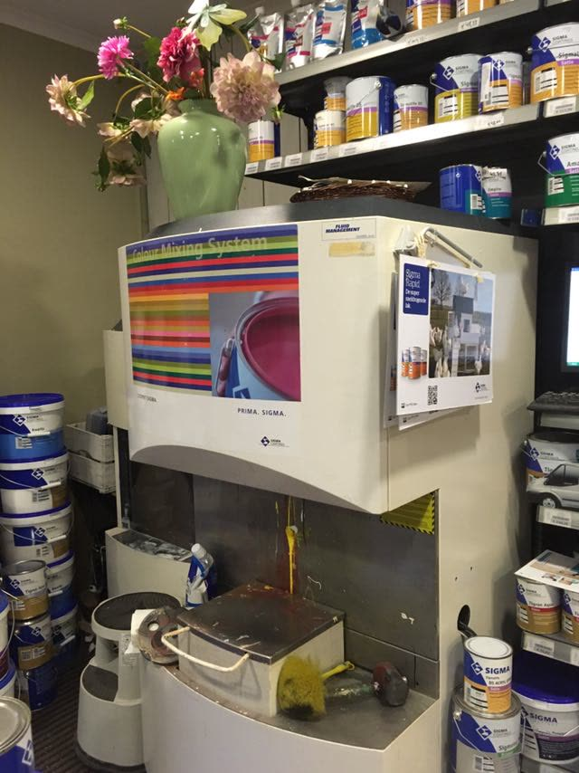
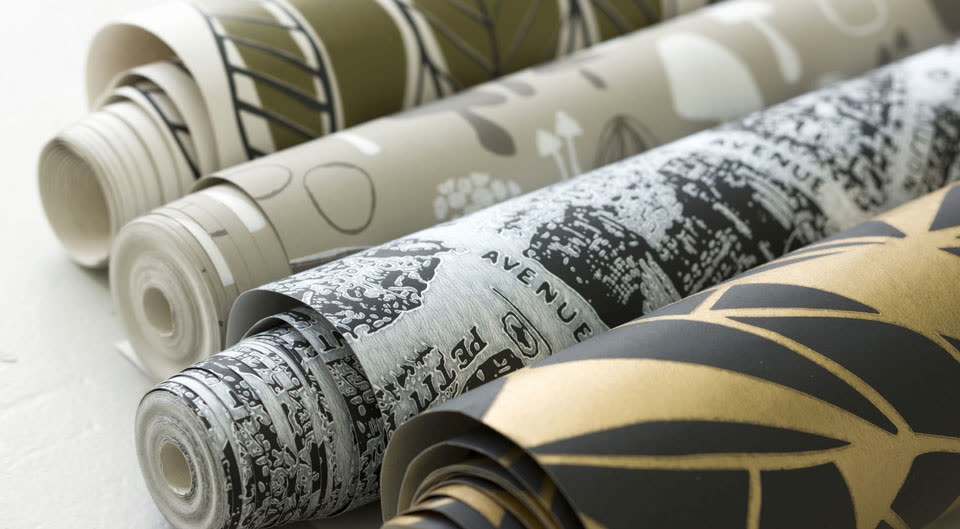
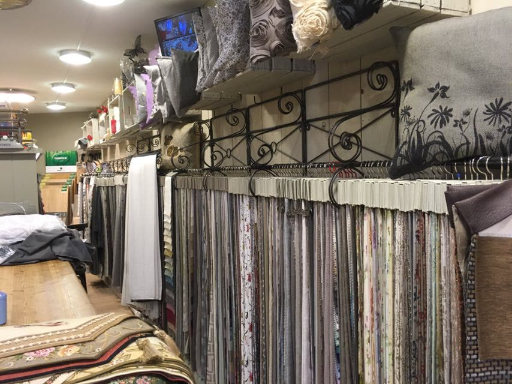
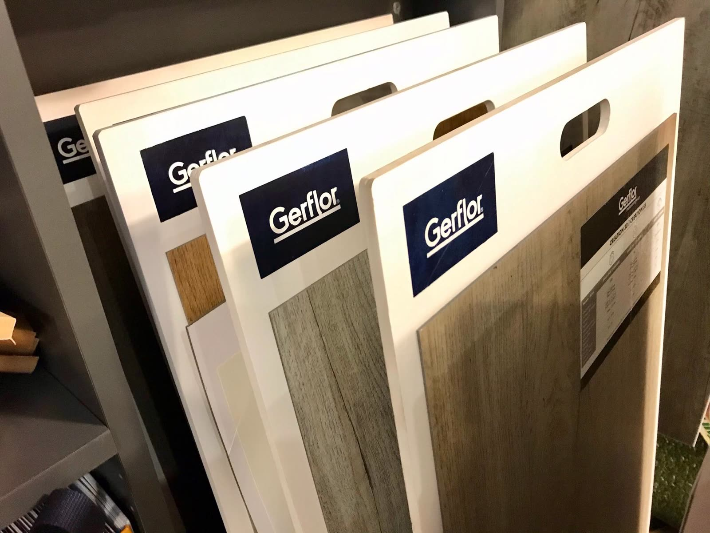
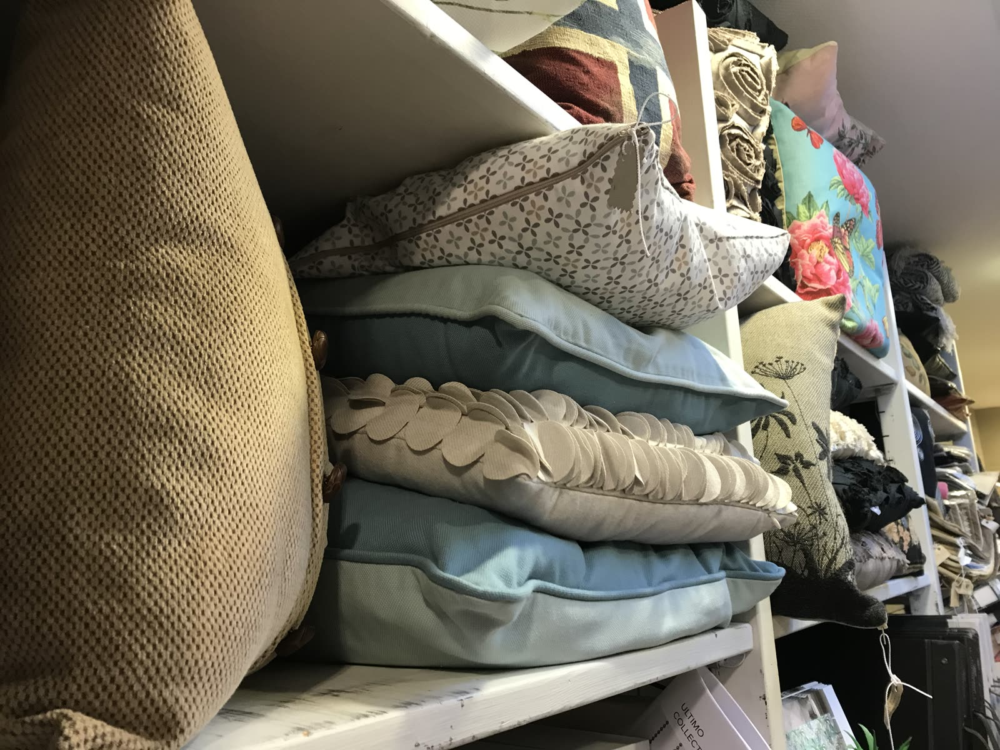
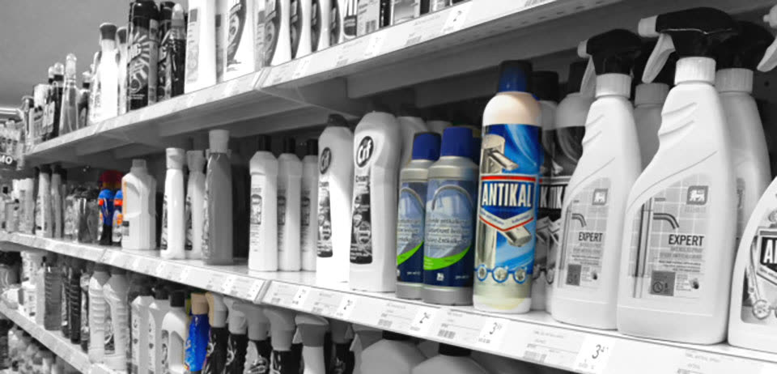
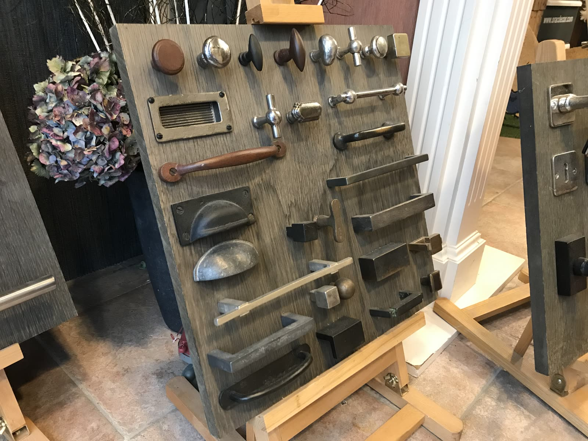
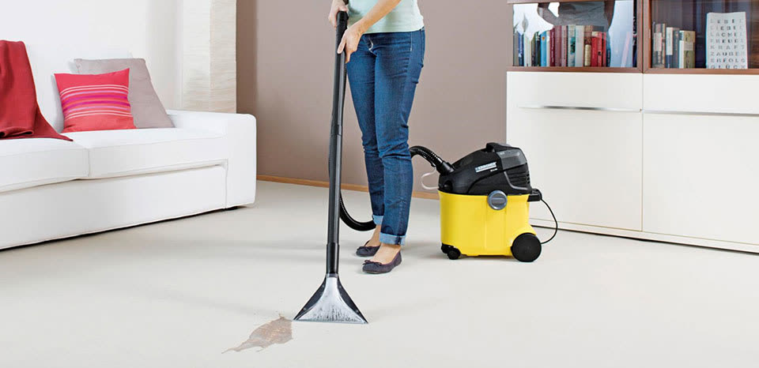

Doe het zelf
Binnenspringen mag altijd
Doe je het liever zelf? Dan verkopen we je exact dezelfde materialen die onze eigen schilders gebruiken. Je betaalt enkel het materiaal. Gratis advies voor al je kleuren en interieur krijg je er gewoon bij, ook als je niets koopt.

01
Verf
“We weten wat we verkopen door de ervaring.”
Van een testpot van 250 ml tot een stevige verfpot van 15 liter: je koopt het allemaal in onze winkel. Met onze mengmachine maken we meer dan 70.000 kleuren. Alles is mogelijk. Zo krijg je dezelfde kleur verf voor je radiator als die op je muren.
Decoratie Lyssens gebruikt enkel de beste merken en is daarom verdeler van Sigma. Daarnaast werken we met:
- Mathys
- Histor
- Histor One
- Trimetal
- Lucite
- CBS
- en nog veel meer
Schildersmateriaal en toebehoren
- Plamuur
- Verfborstels groot en klein
- Schuurmiddelen
- Afplaktape & afdekmateriaal
- Verfbakken
- Handschoenen
- Siliconen en schilderskit
Kortom: alles wat je nodig hebt om je schilderklus te klaren. Vaak gebruikte merken zijn Storch, Progold, 3M, Sia en Tesa.

Handig voor je langskomt
Hoeveel verf heb je nodig?
Meet je kamer op en reken hier snel uit hoeveel liter je ongeveer nodig hebt. Zo weet je op voorhand wat je moet meenemen.
02
Behang
“Laat je interieur tot leven komen met de verschillende soorten behang.”
Voor iedereen wat wils: jong of oud, modern of klassiek, gedurfd of exclusief. Uit een honderdtal behangboeken kan je kiezen om je wens werkelijkheid te laten worden. Of je nu posterbehang, vliesbehang of houtvezelbehang wil, je vindt het hier.
- Arte
- Flamant
- Hooked On Walls
- Live In
- Meistervlies
- Komar
- en nog veel meer

03
Raamdecoratie
“Voor een groot assortiment aan raamdecoratie moet je bij ons zijn.”
Gordijnen, overgordijnen en meubelstoffen
- Kobé
- Essente
- Unland
- Loft 79
- Oer
- Vriesco International
- Live In
- Drapilux
Raambekleding
Rolgordijnen, zonwering, vouwgordijnen, Japanse panelen, jaloezieën in hout of aluminium en lamellen, onder meer van Copa en Lecluyse.
Alles wordt op maat gemaakt in ons eigen atelier. Binnen 10 km rond Merksem meten en plaatsen we gratis.

04
Vloerbekleding
“Bij ons kun je van de vloer eten.”
Het uitzoeken van de juiste vloer is een leuke maar uitdagende klus. Met een vloer van Forbo, Tarkett of Gerflor kies je voor duurzaamheid en kwaliteit. Deze merken bieden de mooiste en meest inspirerende vloeren voor je woning.
- Vinylvloeren
- LVT-vloeren
- Parket (massief hout)
- Laminaat
- Tapijt
- en nog veel meer

05
Accessoires
Op maat
Voor (sier)kussens en tafellakens in alle maten, geuren en kleuren ben je bij Lyssens aan het juiste adres. Deze worden voorbereid in ons eigen atelier.
Je badhanddoek in dezelfde kleur als je badmat? Dat kan. Ook badmatten, handdoeken en wc-matten van Rhomtuft ontbreken niet. Je kiest zelf vorm, afmeting, kleur en materiaal: uit 45 collecties en wel 99 verschillende kleuren. Theenappen, sier- en tafellopers horen er ook bij, met een vaste collectie die je eveneens op maat kan laten maken.
“Het assortiment verandert regelmatig. Wil je zien welke leuke dingen we in huis hebben? Kom dan naar de winkel.”
Een greep uit ons aanbod
- Handgemaakte kaarsen
- Kussens met dieren
- Windlichten
- Vazen
- Bloempotten
- Fotokaders
- Dekens
- en nog veel meer

06
Kuis- en drogisterijproducten
“Met een goed product kuist iedereen graag.” Alles wat een goede drogisterij te bieden heeft, vind je bij ons.
Wij hebben iets voor
- Vloeren
- Plastic reinigen
- Aluminium reinigen
- Onkruid verdelgen
- Wasmachines
- Antivries
- Kleding ontvlekken
- Ontgeuren
- Mierenverdelging
Ook te verkrijgen
- White spirit
- Ammoniak
- Gedemineraliseerd water
- Azijnzuur
- Lampenolie
Merken: een groot assortiment van HG en Berdy, aangevuld met Lamont, RS en Riem.

07
Deur- en meubelbeslag
“Met Dauby ben je altijd gesteld.”
- Designerklinken
- Een groot assortiment binnen- en buitendeurbeslag
- Soorten beslag: binnendeur, buitendeur, meubel en raam
- Materialen: zwart, roest, smeedijzer, roest epoxy, ijzer en meer

08
Tapijtreiniger huren
“Wanneer een stofzuiger niet voldoet.”
Een geweldige tapijtreiniger kan je bij ons huren. Je neemt de machine mee naar huis voor een bepaalde tijd en doet er een vezeldiepe reiniging mee van kamerbreed tapijt, bekleding of bijvoorbeeld autostoelen.

09
Droogkuis & wasserij
“Kuis is de hoogste graad.”
Al jaren biedt Lyssens ook een droogkuis- en wasserijservice aan, aan dezelfde toonbank. Wassen, droogkuis, retouches en stoppage: de mogelijkheden houden niet op.
Dit mag je gerust binnenbrengen
- Lakens
- Beddengoed
- Hemden op kapstok of geplooid
- Lederen vesten en jassen
- Bruidskledij en communiekleding
- Muur- en vloertapijten
- en nog veel meer
Bezoek onze winkel
Voor de beste service en het meest complete advies
- Je kleur ter plaatse gemengd uit meer dan 70.000 tinten
- Stalen mag je gerust mee naar huis nemen
- Alles op maat gemaakt in ons eigen atelier
- Een groot assortiment onderhoudsproducten voor alle doeleinden
- Parkeren voor de deur
Nu lopend: woon je binnen 10 km rond Merksem? Dan meten wij je ramen gratis op én plaatsen we je raamdecoratie zonder extra kosten.
Openingsuren
- Maandag Enkel op afspraak
- Dinsdag 8.30 – 12.00 en 13.00 – 18.00
- Woensdag 8.30 – 12.00 en 13.00 – 18.00
- Donderdag 8.30 – 12.00 en 13.00 – 18.00
- Vrijdag 8.30 – 12.00 en 13.00 – 18.00
- Zaterdag Doorlopend 9.00 – 15.00
- Zondag Gesloten
Alle andere uren zijn enkel op afspraak. Bel ons tijdig, dan plannen we dat samen in.
Lyssens Decoratie & InterieurDe Vlasschaardstraat 28
2170 Merksem
03 644 52 06
lyssensdecoratie@skynet.be